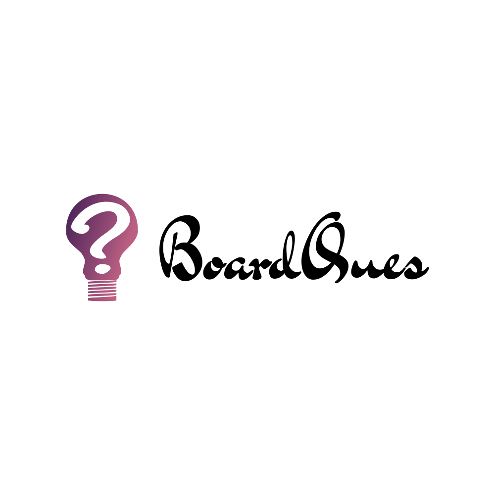

BoardQues is the leading digital learning companion for SSC and HSC students across Bangladesh. In a world where exam preparation can be overwhelming and scattered, we provide a centralized, streamlined, and highly effective platform. We offer comprehensive access to an exhaustive database of previous years' board questions, complemented by expert-verified solutions, and insightful study articles. Our resources are meticulously crafted to demystify complex concepts, foster deep understanding, and ultimately enhance your exam performance, helping you study with clarity and score with confidence.

At BoardQues, our core mission is to democratize education and make high-quality learning resources unconditionally accessible to every student in Bangladesh. We recognize the challenges students face: limited access to reliable study materials, the high cost of private tutoring, and the geographical disparities in educational opportunities. Our goal is to break down these barriers. We firmly believe that a student's potential should not be limited by their location or financial background. Our platform is meticulously designed to be the ultimate one-stop solution for SSC and HSC exam preparation. We are committed to providing a comprehensive and ever-growing collection of board questions, detailed solutions, and in-depth articles that are not only reliable but also exceptionally easy to understand. We don't just want to be a question bank; we aim to build a vibrant, supportive learning ecosystem. By empowering students with the tools to learn, practice, and grow, we are investing in the future of Bangladesh, fostering a generation of critical thinkers and confident achievers who are well-prepared for their exams and beyond.
Our platform boasts an extensive and meticulously verified question bank covering all major education boards in Bangladesh, including Dhaka, Chittagong, Rajshahi, and more. We provide access to a vast repository of past papers, allowing students to familiarize themselves with the exam format, question types, and marking schemes. Our team of educators and subject matter experts works tirelessly to ensure that every question and solution is accurate, up-to-date, and relevant to the current syllabus. This commitment to authenticity means you can trust our resources to provide a realistic and effective preparation experience.
At BoardQues, we understand that simply providing questions is not enough. That's why we have a dedicated team of experienced educators who create our in-depth articles and study guides. These resources are designed to break down even the most complex topics into easy-to-understand concepts. Whether you're struggling with the nuances of English grammar, the intricacies of organic chemistry, or the complex formulas of higher mathematics, our articles provide the clarity and guidance you need to succeed. We cover a wide range of subjects, and our content is constantly updated to reflect the latest academic standards and student needs.
Success in board exams is not just about hard work; it's about smart work. BoardQues helps you prepare strategically by identifying high-yield topics and common exam patterns. By analyzing past papers, you can gain valuable insights into which topics are most frequently tested, allowing you to focus your study time where it matters most. Our platform helps you manage your time effectively, track your progress, and build the confidence you need to perform your best on exam day. We provide the tools you need to move beyond rote memorization and develop a deep, conceptual understanding of your subjects.
We are driven by a social mission to make quality education available to all. That's why every resource on BoardQues is 100% free. We believe that financial constraints should never be a barrier to academic success. Our platform is designed to be a level playing field, providing every student in Bangladesh with the same opportunity to excel. Whether you're studying in a major city or a remote village, as long as you have an internet connection, you have access to our entire library of resources. This commitment to accessibility is at the heart of everything we do.
"As an HSC candidate from a rural area, I didn't have access to good coaching centers. BoardQues has been my personal tutor. The chapter-wise questions and detailed articles helped me clear my concepts in Physics and Math. I feel so much more prepared now. Thank you for making this amazing resource free!"
"BoardQues is a game-changer. The search function is incredibly powerful, and I can find any question from any board within seconds. The articles on writing creatively have been particularly helpful for my Bangla and English exams. I've recommended it to all my friends."
"I used to spend hours searching for past papers online, often finding incomplete or low-quality scans. BoardQues has everything organized in one place. The quality is top-notch, and the user interface is so clean and easy to use. It has saved me so much time and frustration."